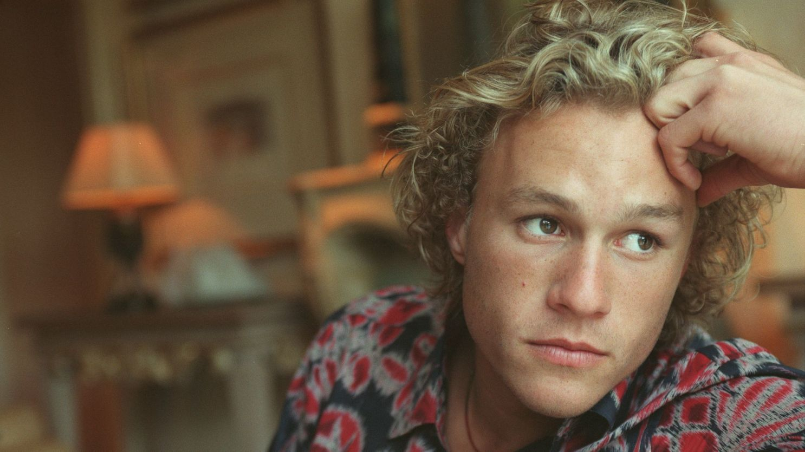
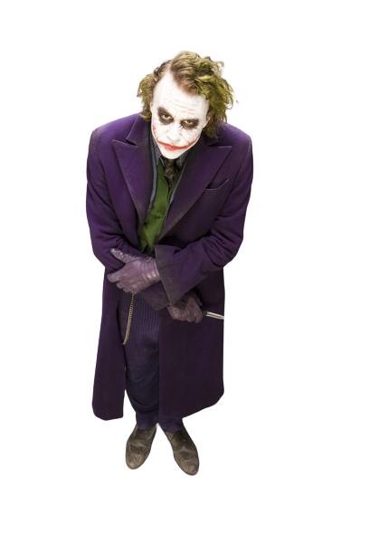

Heath Ledger
Heathcliff Andrew Ledger ou apenas Heath Ledger como era conhecido, foi um ator australiano
que ficou muito conhecido por interpretar o vilão coringa no filme "Batman - O Cavaleiro das Trevas".
(Perth - Austrália, 4 de abril de 1979 - Nova York - EUA, 22 de janeiro de 2008)

Heath Legder em um ensaio fotográfico.
Vida profissional
Anos 90
Aos 16 anos de idade, Ledger fez exames de graduação rápida no ensino médio e partiu para Sydney com o melhor amigo, Trevor DiCarlo, para tentar consolidar-se como ator. Voltou para Perth para atuar como um ciclista homossexual na série de televisão Sweat, de 1996.
Em 1996, antes de fazer a sua estreia no cinema australiano em Blackrock, envolveu-se em Roar, uma série de duração curta da Fox Broadcasting Company. Em 1999, o australiano estrelou no drama adolescente 10 Things I Hate About You, e começou a ganhar visibilidade nos Estados Unidos da América. Também naquele ano estrelou no aclamado filme australiano Two Hands.
Anos 2000
De 2000 até 2005, Ledger estrelou, ao lado do ator Mel Gibson, The Patriot, e outros filmes Monster's Ball, A Knight's Tale, The Four Feathers, Ned Kelly, The Order e The Brothers Grimm. Em 2001, ganhou o prémio ShoWest de "Futura Estrela Masculina" com base nas suas performances em The Patriot e A Knight's Tale.
Em 2005, recebeu o prémio de melhor ator do Círculo de Críticos de Cinema das cidades de Nova Iorque e de São Francisco pelo seu aclamado desempenho no filme Brokeback Mountain, de Ang Lee. Neste, havia interpretado um cowboy chamado Ennis Del Mar que se apaixona por Jack Twist, interpretado por Jake Gyllenhaal. Por esta performance, recebeu também indicações para os prémios de melhor ator nos BAFTA, Globos de Ouro, SAG e Oscar.
O Coringa
No dia 1 de Agosto de 2006, Heath Ledger foi confirmado para o papel de coringa na trilogia do Batman de Cristopher Nolan, inicialmente muito criticado por só ter feito papeis em filmes românticos, os criticos não acreditavam que ele pudesse entregar uma boa atuação na pele do palhaço de Gotham.
Ledger interpretou o Coringa, maior vilão das histórias em quadrinhos do Batman, em The Dark Knight, de 2008, do qual recebeu, no dia 23 de fevereiro de 2009, o prêmio póstumo Oscar na categoria de melhor ator coadjuvante um ano após a sua morte.
O filme teve estreia em 18 de Julho de 2008, e, por já estar em etapa de pós-produção após a morte do ator, não sofreu alterações. Sua campanha de marketing viral, no entanto, por ser até então centrada na interpretação de Ledger, passou a retratar outros elementos do filme.
